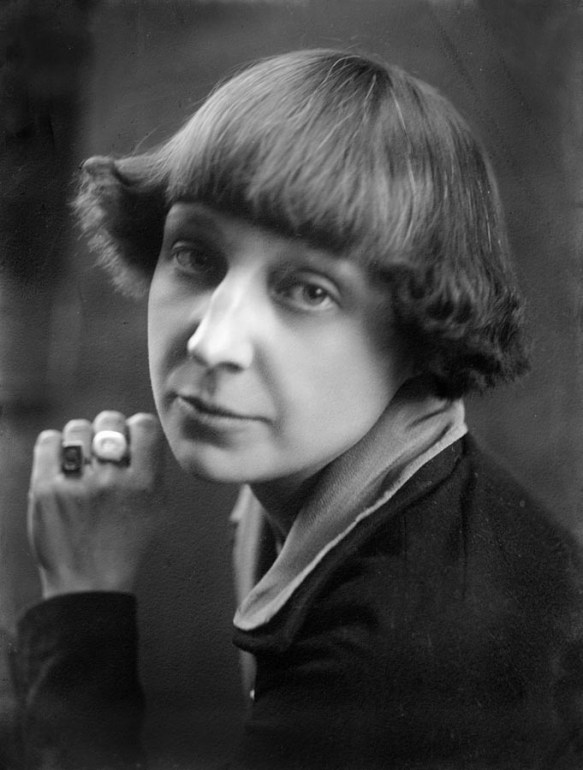

Marina Cwietajewa
Rilke na kilka zaledwie miesięcy przed śmiercią odnalazł wielką miłość, miłość doskonałą; to duchowa mara, piruet unoszący donikąd, zdobycz jednej tylko idei — kobieta jest Rosjanką, poetką, której Rilke nigdy nie widział.
Marina Cwietajewa w roku 1925
Z pewnością nie myliła się, uznając, że będzie ostatnią radością jego życia, „jego ostatnią Rosją”. Związek z Mariną Cwietajewą pozostanie bezcielesny; to prawdziwa mouche jego mogiły, jedna ze znamienitych poetek lirycznych XX wieku. „Poetką z urodzenia” nazwał Pasternak tę mieszkającą na wygnaniu w Paryżu artystkę — to on właśnie złapie dla Rilkego owego motyla. Dedykacja wpisana w egzemplarzach Elegii duinejskich, które wysłane zostały w maju roku 1926 z Valmont do paryskiego XIX arrondissement, jest zaklętym w słowa kluczem wiolinowym, który nadaje ton wytęsknionej dali, pobrzmiewający w owej niezwykłej Symphonie d’Adieu:
Dotykamy się. Czymże? Uderzeniem skrzydeł,
dotykamy się wzajem skroś dali bezkresnej.
Jeden tylko poeta istnieje — ten, który go w sobie niesie,
wychodzi czasem naprzeciw temu, co go niegdyś dźwigał.
Jak gdyby ktoś specjalnie dla Rilkego spłodził człowieka, nie: wynalazł go. Dwudziestoczteroletnia Rosjanka, świetnie wykształcona, obeznana z niemiecką klasyką i literaturą romantyzmu, mogła „żyć tylko w nie-miłości”, stwarzając sobie nierzeczywisty świat prawdziwej miłości, która rodzi się poprzez stopienie dusz, nie ciał. Komentator świata jej wyobraźni mówi tym samym językiem, co interpretator Rilkego: „Człowiek, którego obdarzyła swym uczuciem, w tym czy innym okresie, był dla niej mniej istotny niźli potężny strumień uczuć utrwalonych na papierze (…). Osoby, z którymi Cwietajewa utrzymywała ściślejszy związek, sama stworzyła siłą własnej wyobraźni, powołała do życia przez kaprys, nie bacząc na ich rzeczywistą naturę”.
Albowiem rozstanie — Rilkowskie wyznanie wiary — było też kluczowym pojęciem wrażliwości Cwietajewej; życie jest poślednim szaleństwem, marzenie — rzeczywistością, manifestowaną wyłącznie w sztuce. Są to, jak wiadomo, nauki Nietzschego. Przejmujące, jak ściśle splątani są ci dwoje, związani tylko poprzez sztukę. Dwa poniższe wersy młodej Rosjanki mogłyby wyjść spod pióra Rilkego:
Pozorna dłoń chwyta
pozór innej dłoni.
Niemal dosłowny ich odpowiednik odnajdziemy w jednym z pierwszych listów Rilkego, w którym uszczęśliwiony poeta zakłada, że nie chodzi jej o „Rilkego-człowieka: również i ja poróżniłem się z nim, z jego ciałem”. Podkreśla też owo urojone spotkanie dłoni. Nie-bliskość jako prawdziwa zażyłość: „Swe dłonie, w geście ofiary, na powrót złożone, swe dłonie, Marino, zanurzyłaś w mym sercu, jak w misie tryskającej fontanny: jak długo trzymać je tam będziesz, płynąć będzie do Ciebie stłumiony strumień… Niech Ci się spodoba”.
Chagallowska para pędzi konno po nieziemskiej tęczy wysoko ponad wioską, kościołem i konikami — a zatem: ponad światem; ma rozpływające się barwy iluzji. Oboje korespondencyjni znajomi posługują się różnymi kolorami tej samej palety, jednakże obraz zawsze stapia się w pozbawionej smutku beznadziejności, będącej jego zasadniczą tonacją: „Kocham poetę, nie człowieka (…). Uwaga — Rezygnacja!”. Jakby chcąc odzwierciedlić ów obraz, mówi Rilke o swej „ostatecznej i najjaskrawszej samotności”. Także on czerpał z życia cytaty, to znaczy gromadził owoce swych lektur w zbiór, który miał go żywić. Dlatego też tak bardzo podziwiał Bettinę von Arnim, która z dumą kobiety niezależnej wciąż podkreślała, że jej miłość do Goethego nie wymaga jakiejkolwiek repliki. W niej samej kryją się wołanie i odpowiedź, słucha samej siebie. Niczym antycypacja Rilkowskiej idei miłości nieodwzajemnionej pobrzmiewa pewien list Bettiny: „Załączam ci jeszcze list mój, pisany, kiedy miałam lat siedemnaście, do kogoś, kto z próżności wmówił sobie, że jestem w nim zakochana. W żadnej mierze nie było to prawdą, bowiem nigdy w mym życiu nie byłam zakochana, choć moim przeznaczeniem jest kochać; wszak to coś innego”.
Rainer Maria Rilke i Marina Cwietajewa. Dwa błędne ogniki pędzą ku sobie w szaleńczym tańcu. I rozpierzchają się. Ich niebiosa są wysokie — i puste. Na tym firmamencie Marina Cwietajewa nakreśliła w jednym ze swych ostatnich listów płomienne pismo o „wielkiej nikczemności miłości”, niewdzięcznej i autodestrukcyjnej. Obłok był barwy głębokiej czerni, odległy, daleki; z niego to zagrzmiały pożegnalne słowa Rilkego: „Buntując się przeciw wszelkiemu wykluczeniu / co z miłości korzenia wyrasta, drewniejąc”.
— Fritz Raddatz Rainer Maria Rilke. Byt niezmierzony. Biografia, przeł. Dariusz Guzik